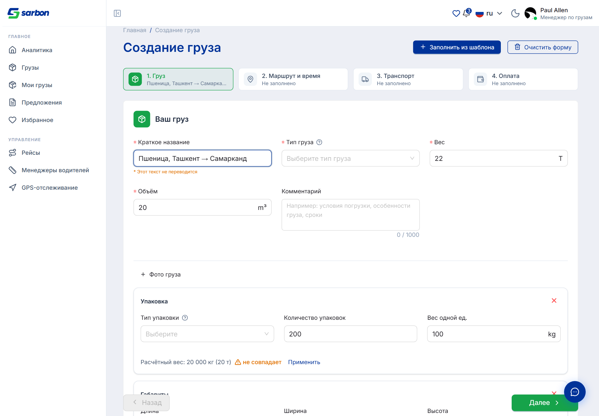
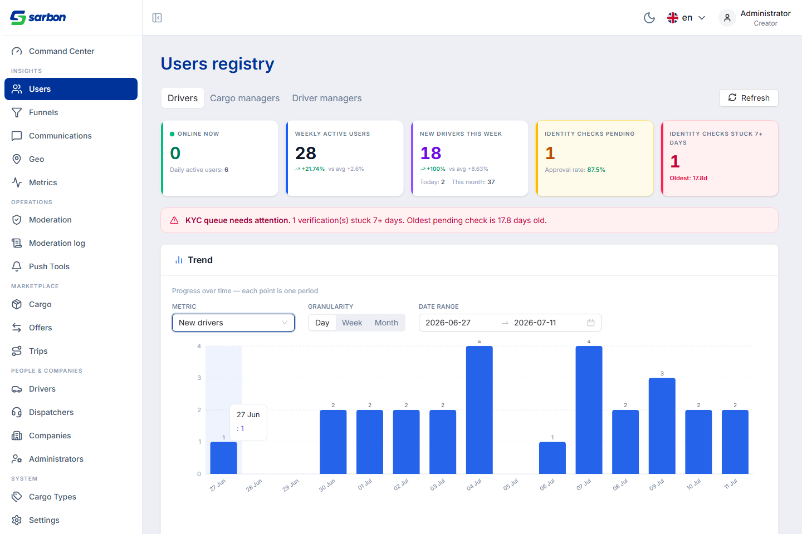
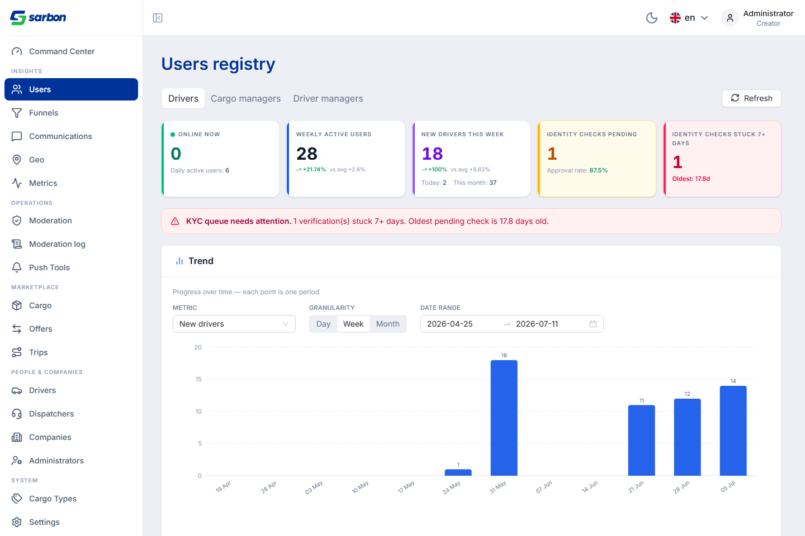
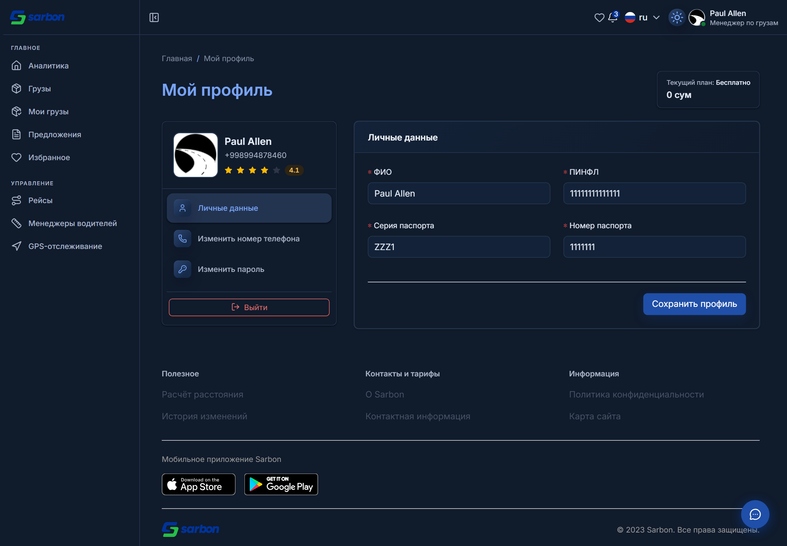
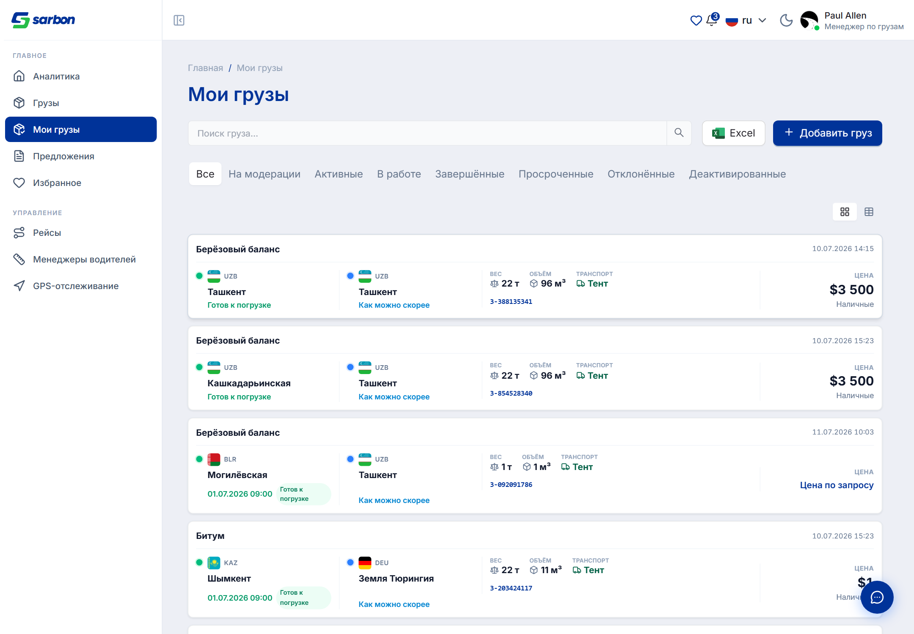

09.07.2026 — фокус на качестве. Прогнали полную трёх-линзовую регрессию: (1) статический поиск багов по 9 подсистемам, (2) Playwright-харнесс с захватом консоли / сети / JS-ошибок и скриншотами (desktop 1440×900 + mobile 390×844), (3) визуальный разбор каждого скриншота. Покрыто 4 роли (public, cargo-manager, driver-manager, admin) — 0 необработанных JS-исключений, все 3 логина работают, ролевое гейтирование подтверждено. Итог: 8 багов закрыто и провалидировано (F-1…F-8), ~35 находок задокументировано с готовыми фиксами, 5 ложных срабатываний отловлено проверкой (headline-сигнал качества). Параллельно — продуктовые доработки формы создания груза: живой перерасчёт веса из упаковки (кол-во × вес одной ед., с предупреждением «не совпадает» и кнопкой «Применить»), оценка объёма из габаритов (Д×Ш×В в метрах → м³), подсказки-тултипы «?» у ярлыков полей (доступные с клавиатуры). В чате — распознавание типа звонка (аудио / видео / экран, входящий/исходящий, пропущенный) из payload и текста события. В админке тренд-график «Новые водители / менеджеры» переведён с линии на столбцы с подписями значений. И тёмная тема для профиля.
| Область | Что было / причина | Что сделано | Файлы |
|---|---|---|---|
| Регрессия всего приложения (3 линзы × 4 роли) QA 8 фиксов закоммичено |
Перед пушем staging→main нужна была уверенность по всему приложению, а не только по свежим фичам. | Статический fan-out по 9 подсистемам (41 находка: 10 High / 22 Med / 9 Low) + Playwright-харнесс (консоль/сеть/JS-ошибки + 526 скриншотов) + визуальный разбор каждого кадра. 8 High/Med фиксов (F-1…F-8), ~35 находок задокументировано, 5 ложных срабатываний отсеяно верификацией против кода. | qa/* (конфиги, находки, отчёт qa-report-2026-07-09.md), qa_browser.mjs |
| Создание груза — живой перерасчёт веса из упаковки feature закоммичено |
Диспетчер вводил вес вручную; расхождение «кол-во упаковок × вес одной ед.» с полем «Вес» ничем не подсвечивалось. | Секция «Упаковка»: из packaging_amount × packaging_unit_weight (кг) выводится итог в кг/тоннах — «Расчётный вес: N кг (M т)»; при расхождении с «Вес» — жёлтое «не совпадает» + «Применить» (никогда не блокирует сохранение). Чистая, юнит-тестируемая функция. | utils/packagingWeight.ts (new), Step1CargoInfo.tsx, packagingWeight.test.ts |
| Создание груза — оценка объёма по габаритам feature закоммичено |
Объём вводился вручную, хотя для многих грузов известны Д×Ш×В. | Секция «Габариты»: из длины × ширины × высоты (в метрах) считается объём габаритного параллелепипеда — «Расчётный объём: N м³» + «Применить». Намеренно неавторитетно (габарит ≥ реального объёма для нестандартных грузов) — только по явному «Применить», без автоперезаписи. | utils/dimensionsVolume.ts (new), Step1CargoInfo.tsx, dimensionsVolume.test.ts |
| Форма — доступные подсказки «?» у полей feature закоммичено |
У части полей (тип груза, тип упаковки) не хватало пояснений «что делать, если не нашли значение». | Переиспользуемый FieldHelpTooltip: маленькая фокусируемая иконка «?» рядом с ярлыком, тултип по наведению / фокусу / клику; контраст иконки выше порога WCAG 1.4.11, screen-reader получает текст через ярлык. | components/ui/FieldHelpTooltip.tsx (new), fieldHelpTooltip.test.tsx, constants/support.ts |
| Чат — распознавание типа звонка (аудио / видео / экран) feature закоммичено |
Событие звонка в чате не различало тип (аудио/видео/демонстрация экрана) — все рендерились одинаково. | normalizeChatCallType + best-effort разбор тела события («call.video.ended», «outgoing video call: missed»…); авторитетный источник — payload.call_type, текст — фоллбэк. Пузырь звонка показывает тип + направление + пропущен/завершён. | chat/utils/chatCallEvents.ts, MessageBubble.tsx, ConversationItem.tsx, chatCallEvents.test.ts, types/chatTypes.ts |
| Админ — тренд-график: линия → столбцы redesign закоммичено |
Тренд «Новые водители / менеджеры» рисовался линией — на разрежённых днях (0–1 в сутки) читался хуже столбцов. | AdminLine → AdminTrendBars: recharts LineChart → BarChart, подписи значений (LabelList), сетка и ось Y. День/Неделя/Месяц и снапшот DAU — как раньше. | charts/AdminTrendBars.tsx (rename), AdminTrendSection.tsx, AdminCommandCenterPage.tsx |
| Профиль — тёмная тема polish закоммичено |
Карточка профиля и «Личные данные» не адаптировались под тёмную тему (светлые поверхности/текст). | Добавлены dark:-классы для поверхностей, границ и текста карточки профиля и сайдбар-карточки. | profile/ProfilePage.tsx, profile/components/ProfileSidebarCard.tsx |
| ID | Сев. | Фикс |
|---|---|---|
| F-1 | High | Кнопка повторной отправки OTP не показывала/не соблюдала кулдаун — countdownSeconds проброшен в <OtpField> (OtpPage.tsx). |
| F-2 | High | Повтор OTP при 429 не запускал кулдаун — добавлен startCooldown(retryAfterSeconds) в onError. |
| F-3 | High | Accept в табличном виде офферов терял валюту → встречное предложение уходило в USD — прокинут offer.currency (offersTableColumns.tsx). |
| F-4 | High | AI-гейт is_cargo: z.coerce.boolean() превращал "false"/"0" в true — добавлен coerceBoolean (cargoAiParseTypes.ts) + тесты. |
| F-5 | High | Повторный тап Accept звонка утекал живой mic/camera-поток + RTCPeerConnection — acceptInFlightRef-гард (GlobalAudioCallModal.tsx). |
| F-6 | Med | Дубликаты React-ключей на дашборде — композитный key с индексом (BreakdownPanel.tsx). |
| F-7 | High | gpsTrackingPage.mapIframeTitle отсутствовал в uz+oz (базовая+фоллбэк локаль) — ключ добавлен. |
| F-8 | Low | Невалидные SVG-пропы fill-rule/clip-rule/clip-path → camelCase (Icons.tsx). |
День собран в 4 коммита ветки staging. Полный QA-отчёт — qa/reports/qa-report-2026-07-09.md; технические записи фиксов — в bug.md (запись 2026-07-09 11:05).
Все скриншоты — реальные, сняты Playwright/Chromium против живого staging-бэкенда с авторизацией (Cargo Manager +998994878460, Admin). Скрипты — в папке отчёта.





| Артефакт | Путь |
|---|---|
| Полный QA-отчёт регрессии (09.07) | qa/reports/qa-report-2026-07-09.md · qa/*.json |
| Журнал исправлений (F-1…F-8) | bug.md (запись 2026-07-09 11:05) |
| Краткая сводка для PM (Excel) | daily-report/09.07.26/report-09.07.26.xlsx |
| Живой перерасчёт веса / объёма + подсказки | src/utils/{packagingWeight,dimensionsVolume}.ts · components/ui/FieldHelpTooltip.tsx · Step1CargoInfo.tsx |
| Тип звонка в чате | src/pages/chat/utils/chatCallEvents.ts · MessageBubble.tsx · ConversationItem.tsx |
| Админ-тренд (линия → столбцы) | src/pages/admin/command-center/charts/AdminTrendBars.tsx · AdminTrendSection.tsx |
| Скриншоты (живые, авторизованные) + capture-скрипты | daily-report/09.07.26/img/ · capture-09-dispatcher.cjs · capture-09-admin.cjs |
| Отчёт предыдущего рабочего дня | daily-report/08.07.26/ |